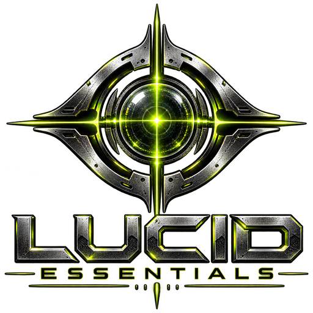
Instruments, effects, MIDI tools and meters as VST3 and Audio Unit plugins. They supply LucidProducer's instruments and effects and run in any DAW that loads those formats.
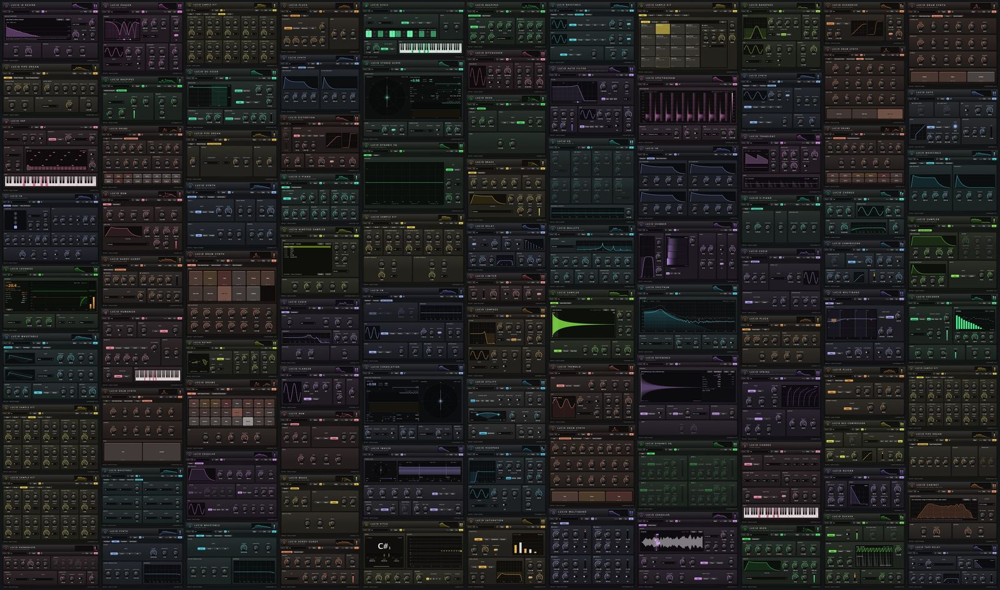
Every page of every plugin. Click for the full-size image.
19 instruments, four MIDI tools, 34 effects and seven meters. Several instruments are physical models: the organ's pipes, a bowed string, a clarinet's reed and bore.
A warm subtractive synth: two oscillators, sub and noise, unison, a ladder filter, an LFO and glide
A four-operator FM synth: eight algorithms, feedback, bells, basses and electric pianos
A morphing wavetable synth: two oscillators through built-in tables, unison, sub and noise, a filter, two envelopes, two LFOs and a mod matrix
A choir and formant pad: ensembles of glottal sources through morphing vowel formants, bass to soprano
A granular cloud synth: grains from built-in voices, bells, strings or your own file, sprayed, scanned, frozen and shimmered
A physically modelled electric piano: tine and reed, bark, bell, damper thunk and suitcase tremolo
Mallet percussion by modal synthesis: marimba, xylophone, vibraphone, glockenspiel, tubular bells and kalimba
A pipe organ of modelled pipes: twelve flue and reed stops, live wind, tremulant, swell box and historical tunings
A modelled plucked string: fitted to real guitars, with palm mute, stiffness, pick position and a buzzing bridge
A bowed string: violin to bass, played with the bow arm
A clarinet's reed and bore, blown with breath and velocity
Buzzing lips on a brass bore: trumpet, horn, trombone
A cranked hurdy-gurdy: a rosined wheel bows the melody, two drones and a buzzing trompette
Highland pipes and smallpipes: a bag blows a reed chanter and three drones that never stop
A synthesized GM drum machine: punchy kicks, snappy snares, shimmering metal and 47 pieces
An analog-style drum synth: eleven deep voices, from a sweeping kick to choked hats
A clean chromatic sampler: one file across the keyboard with band-limited playback, crossfaded loops, a filter and glide
A drum sampler for GM kits: a file on every drum key from 35 to 81, loaded from a folder, with level, tune, decay and choke groups per pad
Sample-ROM player: the nineties sound from SF2 / SoundFont 2 files, with a built-in font when none is loaded
Arpeggiator: tempo-synced patterns with swing, accents and a step sequencer
Chord trigger: one key plays a full chord, fixed or in key, voiced, inverted and strummed
Scale quantizer: keeps every note in key, moves lines by scale degrees, holds them in a range
MIDI humanizer: loose timing, swing, velocity curves and note lengths that make programmed parts feel played
Clean feed-forward compressor: soft knee, peak or RMS detection, a sidechain filter and parallel mix
Glue bus compressor: stepped console-style ratio, attack and release, auto release, a sidechain filter, external key and parallel mix
Multiband compressor for masters: three or four phase-coherent bands, each with its own threshold, ratio, timing and makeup
Lookahead brickwall limiter: true-peak detection, adaptive release and a hard output ceiling
Noise gate and expander: hysteresis, hold, lookahead, a filtered key you can listen to and a click-free gain curve
Sibilance control, split or wide: turns down harsh esses only while they stick out, with a relative threshold that follows the voice
Transient shaper: more or less attack and sustain at any level, with no threshold to set
Sidechain ducker and expander: duck under a kick or a voice, expand from a key, or pump in time without a sidechain
Eight-band channel EQ: steep cuts, resonant shelves, four peaks and an exact response curve
Four-band dynamic EQ: bells and shelves that cut or lift only while their band is loud, keyed by the track or a sidechain
Resonant low-pass filter: clean to ladder grit, with LFO, envelope follower and stereo spread
Resonant band-pass filter: center and width, from telephone to wah to siren
Resonant high-pass filter: clean-ups, risers and thin, moving textures
Resonant filter moved by an envelope follower and a tempo-synced LFO: auto-wah to stereo sweep
Lush stereo chorus: one to three voices, from subtle doubling to wide ensembles
Stereo feedback flanger: from a gentle swirl to a screaming jet
Stereo allpass phaser: from a gentle 4-stage swirl to a resonant 12-stage sweep
Tremolo and auto-pan: amp-style throb, harmonic tremolo and tempo-locked chops that never click
A rotary speaker: horn and drum spinning up and braking on their own, tube drive, two mics
Channel vocoder: 8 to 32 bands from 80 Hz to 4.5 kHz put a voice's shape on the sidechain or on a built-in saw, pulse or noise chord, with a separate pass for sibilants
Tempo-synced stereo delay: ping-pong, tape age and ducking, from slapback to dub
Tape echo: three heads, drive up to self-oscillation, wow, flutter and an aging tape
Algorithmic stereo reverb: smooth, dense tails from small rooms to endless halls
Shimmer reverb: a lush tail that climbs in pitch, with a freeze that holds it forever
Spring tank with a real chirp and drip, and a Dattorro plate beside it
Convolution reverb: ten real spaces from the OpenAIR library (CC BY 4.0) and your own impulse responses
Tape, tube, transformer, console: analog warmth that adds harmonics to tracks and buses without sounding distorted
Warm, touch-sensitive drive: screamer mid push, blues crunch or tube warmth
Five-mode distortion: hard clip, sputtering fuzz, wavefolding, rectifying and lo-fi crushing, oversampled
Guitar and bass cabinet simulator: captured and designed cabinets, two mics, distance and your own IRs
Lo-fi converter: continuous bit depth, sample-rate reduction, dither, jitter, hiss, crackle and wobble
Pitch shifter and harmonizer: two voices with fixed or in-key intervals, feedback and formant preservation at a constant 40 ms latency
Multiband stereo imager: width per band, bass mono, mid / side balance and a mono-safe stereoizer, with correlation and balance meters
Gain, pan and stereo toolbox: trim, balance, widen, mono the bass, flip polarity and align channels on any track
Real-time spectrum analyzer: a calibrated FFT spectrum with average, peak hold, slope and left / right or mid / side curves
Scrolling spectrogram: a heat map of the spectrum over time, on a log or linear frequency axis, in four color maps
EBU R128 loudness meter: integrated, short-term and momentary LUFS, loudness range and true peak against your delivery target
Tuner and pitch tracker: a cent-accurate needle and a scrolling melody line for any monophonic source
Stereo field meter: a goniometer with phase correlation per band, balance and width, to check mono compatibility and the stereo image
Phase and correlation meter: correlation over time, per band and as a goniometer, balance and a mono check, with the audio untouched
Reference A/B: switch between your mix and a reference track, loudness matched, with its transport, loop and mono check
Rendered from the plugins' own editors. Click an image to enlarge it.
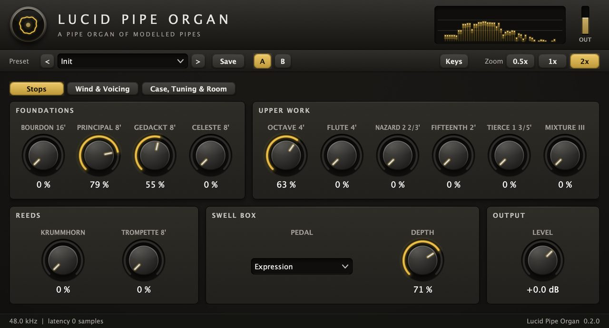
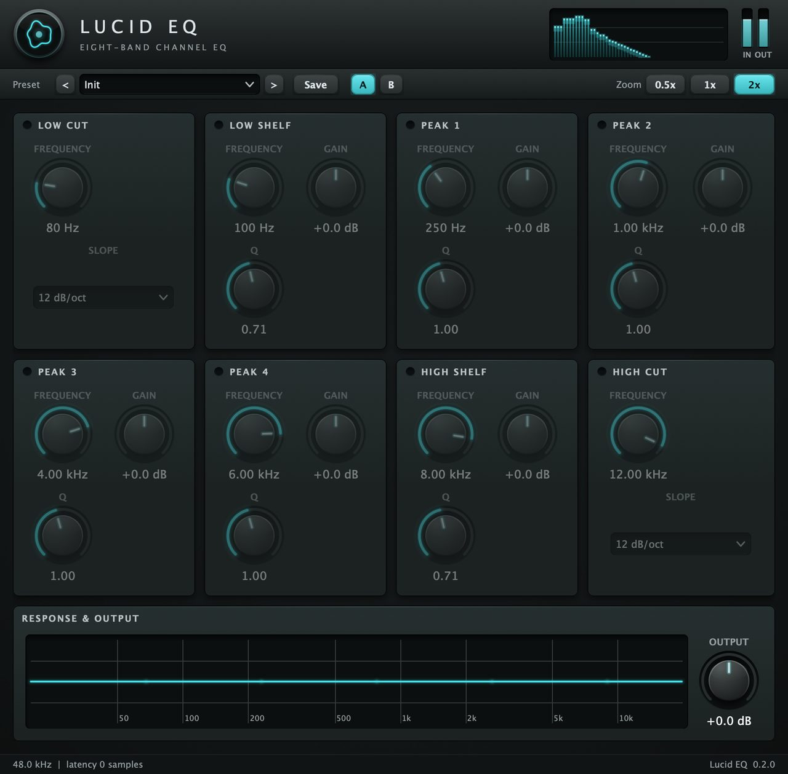
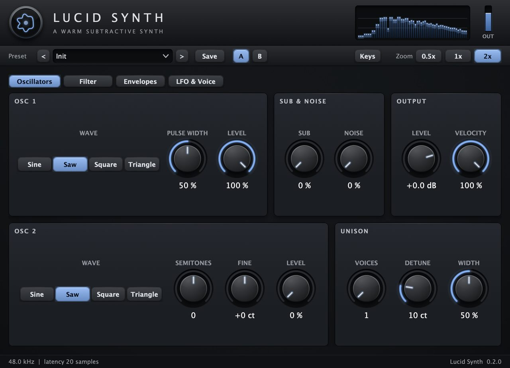
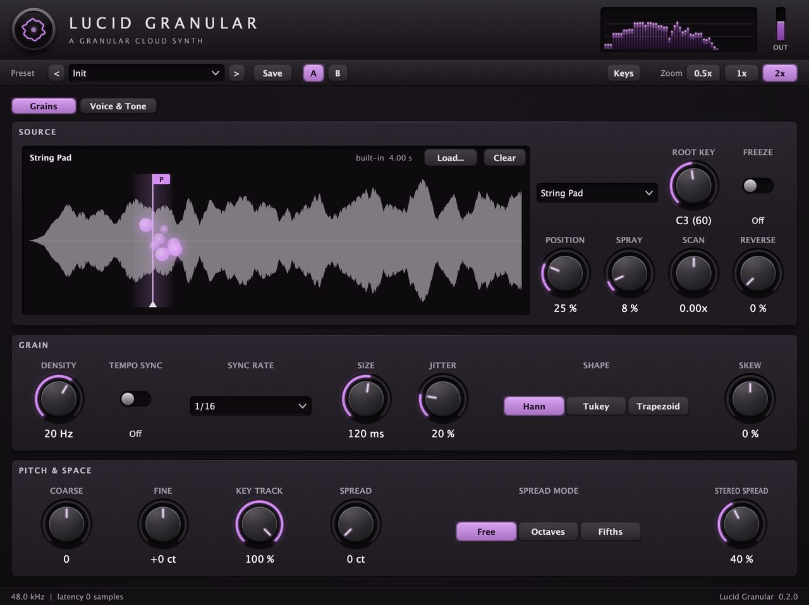
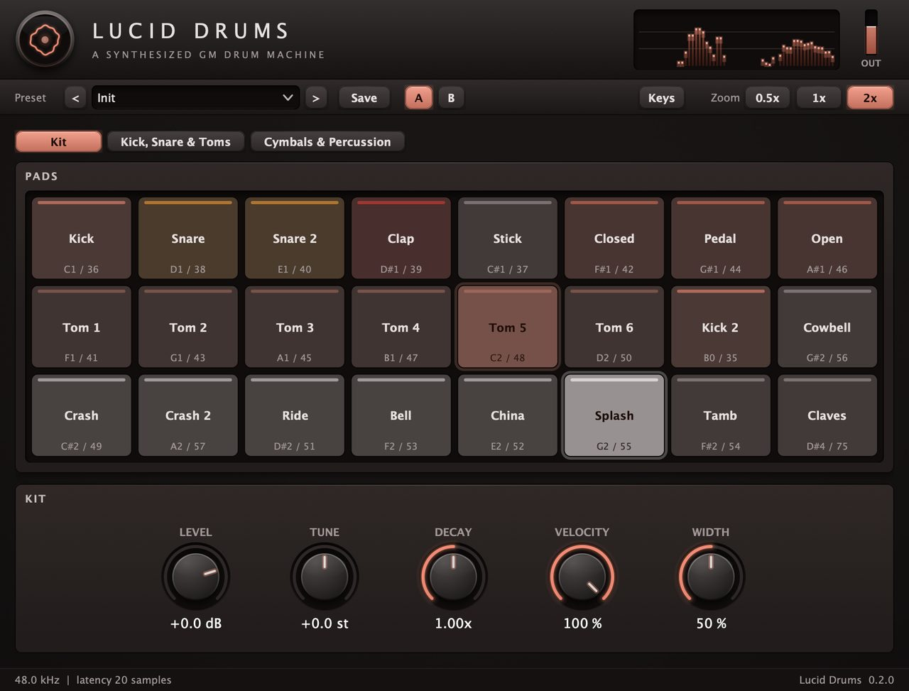
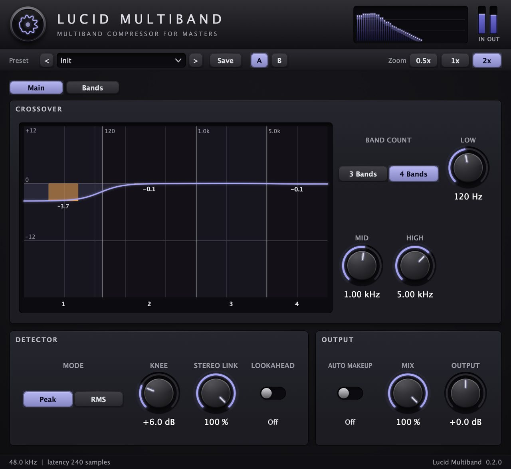
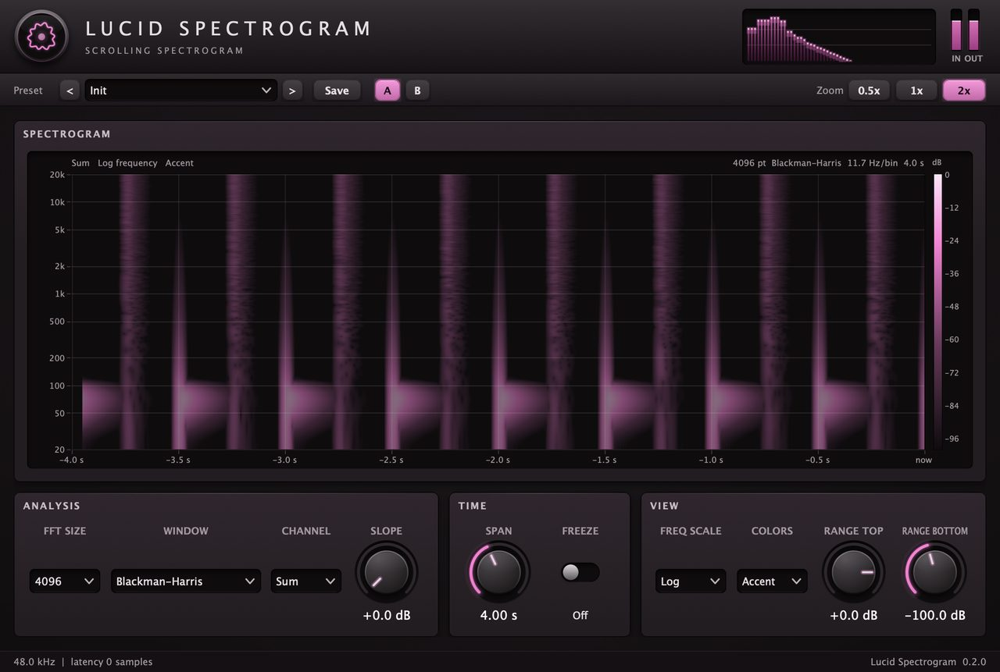
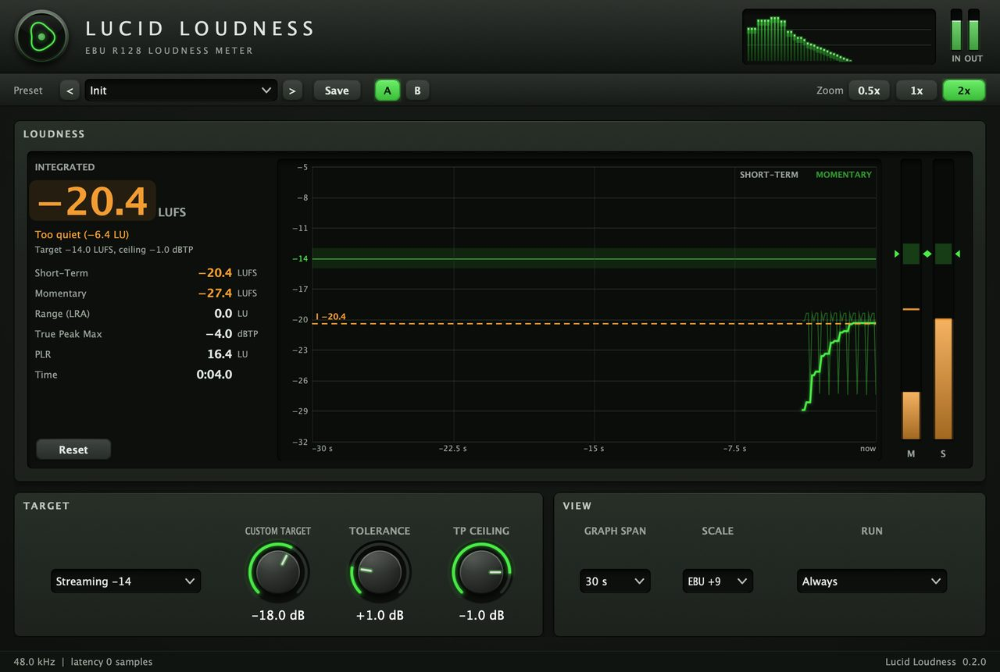
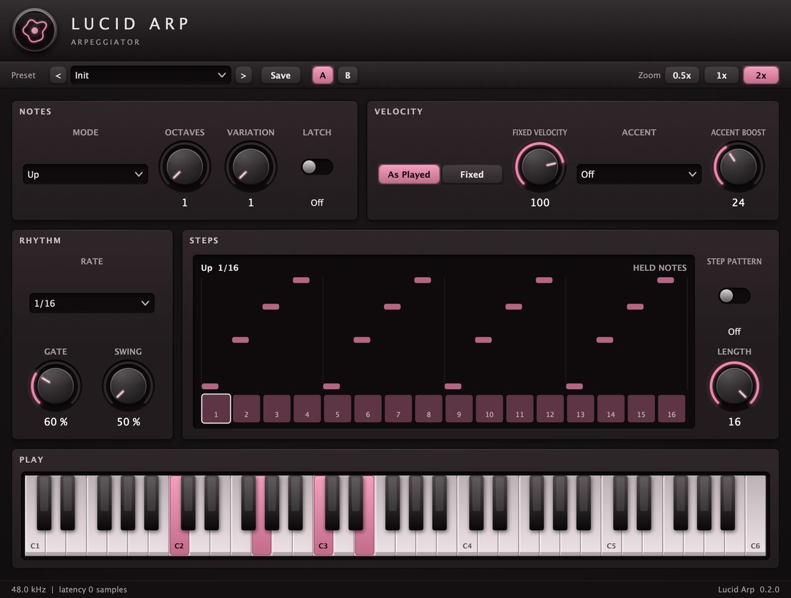
No plugin has editor code of its own. Each one describes its parameters and sections, and a shared library builds the window, so all 64 look and behave the same.
Knobs, selectors and displays are laid out at runtime from a short description. Each plugin gets its own tint, and its emblem is generated from a seed.
Every editor has the same top bar: a preset browser with factory presets, A/B comparison and three zoom sizes. Instruments add a Keys button that shows a playable keyboard.
Processing never allocates, locks or does file I/O. A shared test suite counts allocations for every plugin, and pluginval and auval validate the builds.
A command line tool drives any plugin offline with JSON output, so an AI agent or a CI job can build and check a plugin without opening a DAW.
agent.md that
tells an agent what the plugin does and how to set it.$ lucid-essentials-cli list $ lucid-essentials-cli params LucidChorus # render audio with parameter settings $ lucid-essentials-cli render LucidChorus -o out.wav \ --signal drums --set mix=60 --set rate_hz=0.5 # look at the editor, check every layout $ lucid-essentials-cli snapshot LucidChorus -o chorus.png $ lucid-essentials-cli check all
Lucid Essentials is in pre-alpha on macOS, with a draft Linux build. It is part of the Lucid Music Suite, next to LucidProducer and LucidPerformer, which load these plugins first. The impulse responses in Lucid IR Reverb come from the OpenAIR library (CC BY 4.0).